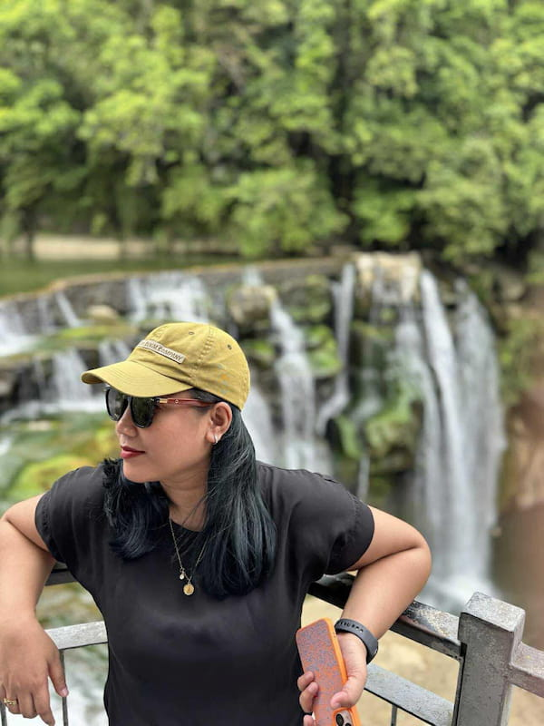

About Me
I am Aine Villegas and you can call me Aine. I was born and live in the Philippines. I am currently working as Data Quality Lead in a reputable airline in the Philippines. I love to travel and I love to learn new things.

Mabalacat, Philippines
The Philippines is an archipelago located in Southeast Asia, consisting of over 7,000 islands. It is known for its beaches, biodiversity, and rich culture. With a history influenced by Indigenous communities and later Spanish and American colonization, the country blends tradition and modern life.